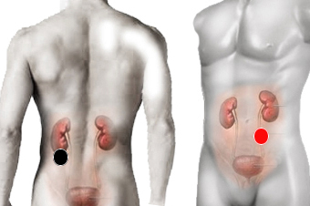

Herpes 5
Par
caliz renal - uretero
plexo muñeca - plexo muñeca

Generalidades:
Virus A.D.N. Trastornos en las vías urinarias y órganos genitales como: Uretritis, Vaginitis, Cistitis (Inflamación de la vejiga que puede provocar fiebre alta). Diabetes falsa por su cercanía con el páncreas.
Corresponde al Citomegalovirus. Como todos los tipos de herpes, puede permanecer latente en el sistema nervioso sin ser detectado por el sistema inmune.